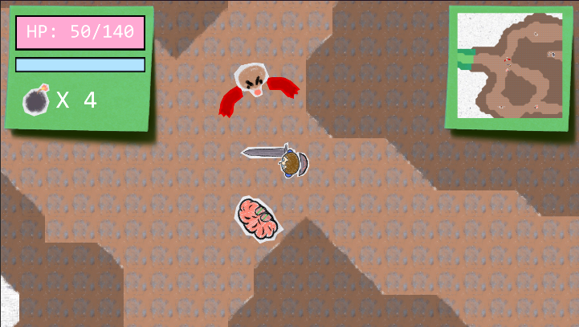

Paper Sword
"Paper Sword" is a top-down action RPG made in Unity. Inspired by Zelda, Dark Souls, and Death's Door, It features hit-and-roll-based combat with a shield to block projectiles. I made this game in summer between by foundation and first year of university.

This project taught me how to use Unity's input system for supporting controller as well as keyboard. I also added a basic leveling system in the game to increase, strength, stamina and health. The game also featured a save and load feature so they coulld start and stop wherever they choose.
